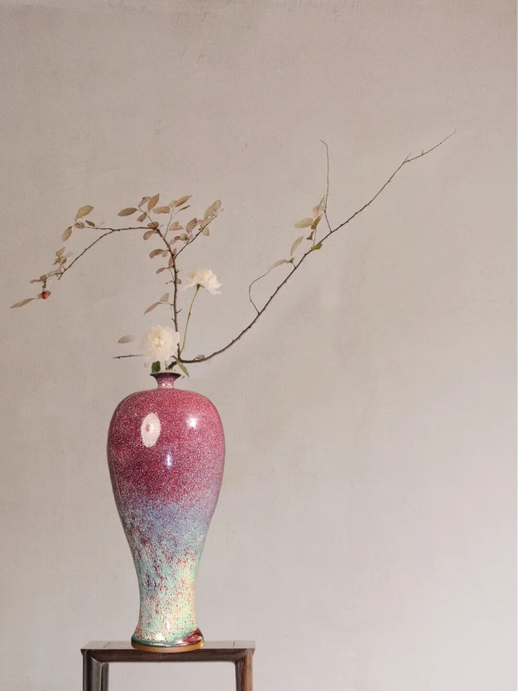
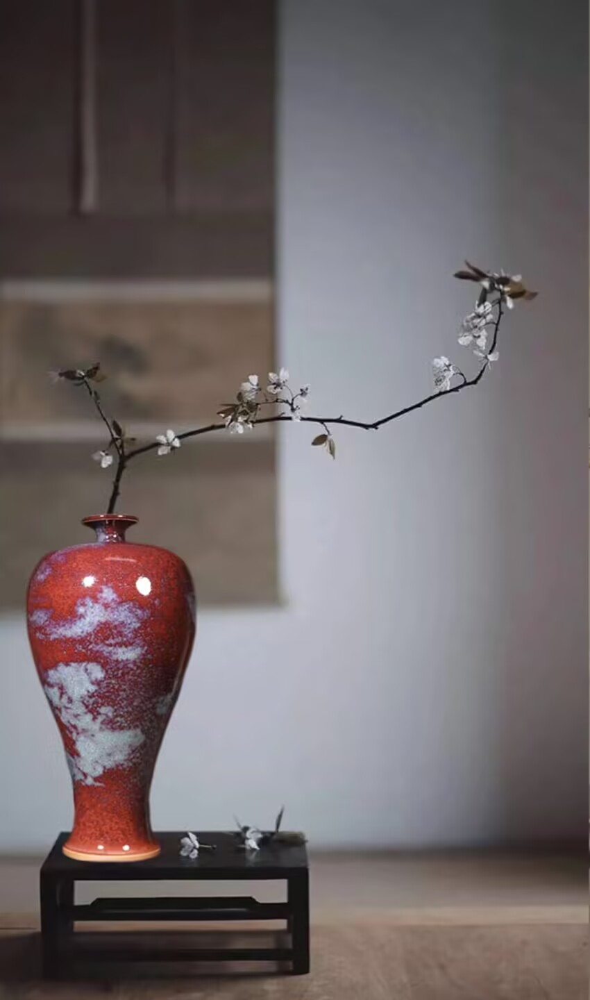
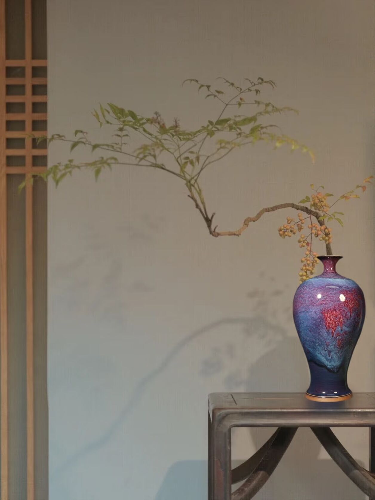

钧窑简介
钧窑窑址位于河南禹州神垕镇（古钧州境内），烧造年代始于唐代，北宋晚期达到鼎盛，是宋代唯一突破青瓷单色釉的名窑，兼具宫廷御用和民间烧造属性，金元时期延续烧造，影响范围极广，有“入窑一色，出窑万彩”的窑变美誉。
其造型厚重规整，以海棠式花盆、仰钟式花盆、出戟尊等陈设瓷和实用瓷为主，宫廷用花盆多带有数字编号以区分大小；胎色灰褐，胎质相对粗松，釉料中含铜元素，在还原焰烧制过程中发生窑变，釉层较厚，部分器物釉面会形成“蚯蚓走泥纹”；装烧方式以垫饼烧造为主，部分宫廷用瓷采用支钉烧造，器物无明显刻划印花纹饰，靠窑变釉色形成自然装饰。
悬停放大查看细节


